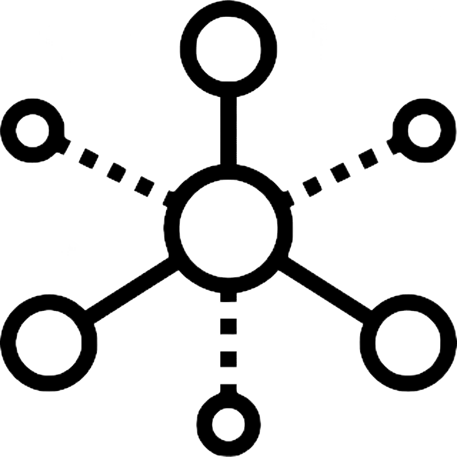

Министерство науки и высшего образования РФ
ФГБОУ ВО «Удмуртский государственный университет»
Институт математики, информационных технологий и физики
Кафедра информационных систем и сетей
Направление 09.03.01.01 «Информатика и вычислительная техника»
Выпускная квалификационная работа на тему: «Разработка автоматизированной системы проветривания помещения»
Выполнил:
студент группы ОБ-09.03.03.01-41
Белкин Никита Вячеславович
Постановка задачи
Цель: разработать автоматизированную систему проветривания помещения
Требования к системе:
- Простота
- Легкая установка механизма на окно
- Удобное управление
Поставленные задачи:
- Изучить аналоги, представленные на рынке
- Разработать общую схему устройства
- Смоделировать механизм, двигающий подвижную створку окна
- Разработать алгоритм для автоматизированного управления механизмом
- Написать программу для микроконтроллера на основе разработанного алгоритма
- Написать мобильное приложение для удобного управления
Обзор аналогов


Использованные технологии
Условная схема устройства
Управляющий механизм
Свойства
- Простота
- Легкая установка на окно
Первый вариант механизма
Механизм на основе катушки с леской
Второй вариант механизма
Механизм на основе зубчатой рейки и шестерни
Микроконтроллер и плата
Программа для управления микроконтроллером
Язык программирования
Использованные библиотеки

Логика работы
Режимы работы
Взаимодействие с устройством передачи данных
Взаимодействие с устройством передачи данных

Управление двигателем
H-мост

Интерфейс мобильного приложения
Интерфейс мобильного приложения
Интерфейс мобильного приложения
Интерфейс мобильного приложения

Интерфейс мобильного приложения
Заключение
Используя собранную электрическую схему, смоделированный механизм и мобильное приложение, была разработана автоматизированная система проветривания помещения
Возможные пути развития


Получившийся результат
- Был создан минимально работоспособный прототип
Нерешённые проблемы:
- Ложные срабатывания реле, из-за чего створка не доходит до конечного положения
- Нет сильного прижима окна в закрытом положении
- Нет питания от аккумуляторов